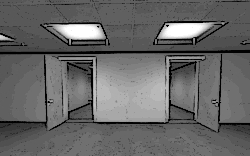

NARRADOR: Estênio se levanta e se dirige ao corredor. A porta do seu escritório se fecha atrás dele, e ele deixou a chave dentro. Ele não vê nenhum de seus colegas, apenas uma porta aberta no final desse corredor. Ele caminha até a porta e vê que ela leva para uma sala com duas portas.
NARRADOR: Sem pensar muito, Estênio entra NA PORTA DA DIREITA.